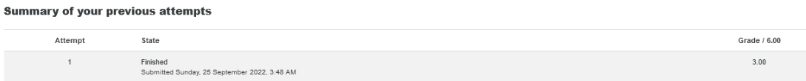
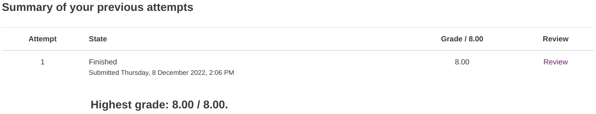

Research
Methods and Professional Practice
1.
Objective
In this module, we will learn
what is the Purpose of Research?
The 3 main reasons/purposes of
research are:
1.1: to explore (familiarise
yourself with a topic/situation)
1.2: to describe (describe
your findings),
1.3: to explain (answer the
why why)
One of the most important
approaches in research is the scientific method which involves:
-
observation,
-
hypothesis,
-
reasoning and
-
testing
The focus in this unit is on
the types of reasoning used in the scientific method as these are the key
approaches for problem-solving.
The 2 core types of reasoning
are Deductive and Inductive reasoning:
2.
Collaborative Learning Discussion 1
Pick a case study from the
examples provided by the Association of Computing Machinery (ACM).
Review the application of the
ethics code to the situation described and highlight the impact on:
-
any relevant legal (jurisdictional or non-jurisdictional)
and social issues,
-
as well as on the professionalism of the
computing professionals involved.
We should provide comparisons
to the British Computer Society (BCS) Code of Conduct.
This is my initial post:

First Peer Response by Ali
Ahmad
My response to Ali:

Second Peer Respnse by
Babatunde Ahmed:

My response to Babatunde:

3.
Reasoning Quiz
The quiz helps in my
understanding of what is inductive versus deductive reasons, however it is not
easy.

4.
Reflective Activity - Ethics in Computing
As part of
an effort to improve safety, the company where I work intends to implement a
smartwatch wearable. Here is the operation flow:
a. Every
night shift, two workers are on site - one in the control room and the other
wearing a smartwatch periodically walking around the perimeter of the waste
water tank to check for anomalies.
b. The
smartwatch tracks the lone worker's movements and sends them back to the control
room.
c. In the
event that the smartwatch detects an abnormal situation, such as 15 minutes of
no movement or the lone worker entering a restricted zone, an alarm is
triggered, and the worker in the control room must communicate or assist his
colleague.
d. Additionally,
the smartwatch monitors the heartbeat and blood pressure and sets off an alarm
when the heartbeat or blood pressure exceeds predetermined levels.
The
management has acknowledged data privacy concerns by instructing workers to
wear the smartwatch only when they are on-site and to remove it once they have
completed their work. As these workers do not speak or understand English, the
management has assigned this task to a supervisor who will then explain it to
the workers.
In this
project, I work with the vendor to ensure that data is stored securely in the
vendor's cloud and that WIFI is made available to the smartwatch.
It is
apparent that there are many other ethical and social issues to consider
besides data privacy highlighted by the management, and in addition,
professionalism needs to be taken into consideration too:
a.
Privacy
i.
According to Stahl et al. (2016), ethical issues related to
privacy were most researched; a smartwatch collects many data, including
sensitive data such as health-related information (Ching and Singh, 2016),
which increases the risk of information leakage (Lee et al., 2016) in these
days and age.
b.
Inappropriate Secondary Use
i.
Obtrusive data collection may take place without end-user
awareness (Bower and Sturman, 2015). The collection of unnecessary
data is particularly concerning when we consider that sometimes the user does
not know what data is being collected or who has access to the stored
information (Thierer, 2014). Further, the definition of what constitutes
'personal information may not be mutually understood by management and end
users (Segura Anaya et al.,2018).
c.
Security of physical asset
i.
Leakage or compromise of personal information due to software
vulnerabilities and physical loss of the devices have a potentially high impact
on individuals as the smartwatch vendor may not have the competence to address
data security issues as hardware and software companies usually do (Shahmiri,
2016).
What
actions can be taken by me?
a.
Informed consent
i.
The smartwatch's purpose, usage and information should be
clearly explained directly to workers by an interpreter and not via the
supervisor since the latter may not be able to communicate the intended
objectives clearly.
ii.
The purpose is to uphold ACM principle 1.3, where a
professional should be transparent about the system's capabilities, limitations
and potential problems to the workers (ACM, 2022). Separately, encouraging
clear and direct communication and avoiding misleading information being
cascaded to workers helps to adhere to principle 2.7.
b.
Data anonymization
i.
Data should be encrypted in the cloud and anonymised so
individual identities cannot be reconstructed in case of a data leak.
ii.
This purpose is to respect privacy and minimise harm,
adhering to ACM principles 1.6 and 1.2, respectively.
c.
Perimeter restriction
i.
The smartwatch shall be programmed to connect to a dedicated
SSID within the boundary of the workplace. Therefore, the worker is less likely
to encounter privacy concerns if he or she has forgotten and wears it at
home.
ii.
This recommendation is to uphold ACM principles 1.1
(well-being, 1.6 (privacy), 2.1 (quality in the process), 2.5 (sufficient care
taken to identify and mitigate potential risks)
d. Data Audit
and Non-disclosure agreement (NDA)
i.
Data stored in the cloud should be subject to an NDA between
the company and the vendor so that the data can be audited and therefore remain
within the company's perimeter and not shared with any third parties.
ii.
This recommendation is to uphold ACM principles 1.2 (to
report signs of risks that might result in harm) and 2.9 (ensure the system
functions as intended)
References:
ACM (2022)
ACM Code of Ethics and Professional Conduct. Available from:
https://www.acm.org/code-of-ethics [Last Accessed 23-Sep-2022].
Bower, M.,
and Sturman, D. 2015. "What Are the Educational Affordances of Wearable
Technologies?, "
Computers & Education(88), pp. 343-353.
Ching, K.
W., and Singh, M. M. 2016. "Wearable Technology Devices Security and
Privacy Vulnerability Analysis, " International Journal of Network Security & Its
Applications(8:3), pp. 19-30
Lee,
J., Kim, D., Ryoo, H.-Y., and Shin,
B.-S. 2016. "Sustainable Wearables: Wearable Technology for Enhancing the
Quality of Human Life, "
Sustainability (8:5), p. 466
Segura
Anaya, L. H., Alsadoon, A., Costadopoulos, N., and Prasad, P. W. C. 2018. "Ethical
Implications of User Perceptions of Wearable Devices, " Science and
Engineering Ethics(24:1), pp. 1-28.
Shahmiri,
S. 2016. "Wearing Your Data on Your Sleeve: Wearables, the FTC, and the
Privacy Implications of This New Technology, " Tex. Rev. Ent. & Sports L.(18), p. 25.
Sivathanu,
B. 2018. "Adoption of Internet of Things (IoT) BasedWearables
for Healthcare of Older Adults - a Behavioural Reasoning
Theory (BRT) Approach, "
Journal of Enabling Technologies(12:4), pp. 169-185
Thierer,
A. D. 2014. "The Internet of Things & Wearable Technology:
Addressing Privacy & Security Concerns Without Derailing
Innovation, "
SSRN Electronic Journal
5.
Literature Review Guide
WRITING A LITERATURE REVIEW
Guiding questions to support
planning, revising, and refining of a literature review *
How can technology be used to
raise awareness of reducing food waste among Singapore's working adults
1. What is the focus and aim
of your review? Who is your audience?
Focus: Raising awareness
Aim: To reduce food waste
Audience: Working adults in
Singapore
2. Why is there a need for
your review? Why is it significant?
Not enough is being done to
reach out to the working adults
Significant: The total amount
of food waste generated in 2021 was 817,000 tonnes, which was 23 per cent more
than the 665,000 tonnes generated in 2020 (NEA, 2022)
3. What is the context of the
topic or issue? What perspective do you take? What framework do you use to
synthesise the literature?
4. How did you locate and
select sources for inclusion in the review?
Interview
Google Scholar
5. How is your review
structured?
Introduction/Abstract
Main Body
Methods
Challenges
Results
Conclusion
References
6. What are the main findings
in the literature on this topic?
Reasons why Working adults are
not eager to cut food wastage
Benefits of using technology
to raise awareness
Challenges with using
technology
7. What are the main strengths
and limitations of this literature?
Only office working adults are
targetted
Non-working adults, students
and home-based working adults are excluded
8. Are there any discrepancies
in this literature?
9. What conclusions do your
draw from the review? What do you argue needs to be done as an outcome of the
review?
* As with other sets of
guiding questions in this book, select those questions that are relevant to
your context, add others as appropriate, and decide the order in which you will
address them to communicate effectively with your audience.
Source: Healey, M., Matthews,
K., & Cook-Sather, A. (2020) Writing about learning and teaching in higher
education
Creating and
contributing to scholarly conversations across a
range of genres.
Center for Engaged Learning Open-Access Books, Elon University. 142-152.